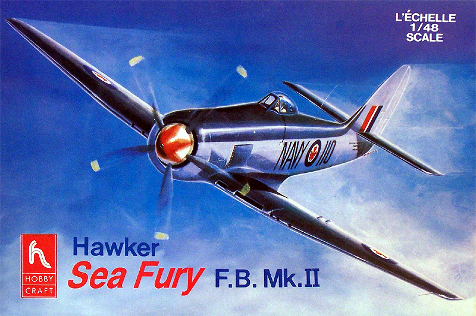
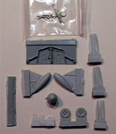

{kind=link}
{kind=link}
{kind=link}
{kind=link}
{kind=link}
{kind=link}


Hobby Craft Hawker Sea Fury F.B. Mk. II

Kit #1583
Collector’s Market Value $15.00
Images and text Copyright © 2007 by Matt Swan
Developmental Background
Design work on the Hawker Sea Fury began during the Second World War and built upon proven design features found in the Typhoon and the Tempest. It incorporated a similar semi-elliptical wing as seen on the Tempest and improved on the Monocoque fuselage design giving the pilot and even better field of view. Not only was the Air Ministry impressed but the Royal Navy was now looking at it to replace the Boulton-Paul aircraft currently in use. The first prototype of the Sea Fury did not fly until Feb. 21st, 1945 and production development would not allow the type to see action in the Second World War but future conflicts would prove out the design very well.
When the Japanese surrendered in 1945 development of the land based Fury was cancelled but the Sea Fury program continued. The final Sea Fury prototype with folding wings flew in September of 1946 and by the spring of 1947 had obtained approval for carrier operations. Shortly thereafter units began converting over from the Boulant-Paul aircraft and Supermarine Seafires. The Sea Fury remained active in the Fleet Naval Arm until 1953 and in reserve units until 1955. It saw combat duty during the Korean War as a ground support aircraft and also can lay claim to at least one MiG-15 kill. The Sea Fury served in several other air forces including Canada’s, Egypt’s and Cuba’s. The Sea Fury even saw action during the ‘Bay of Pigs’ conflict. By time production of the aircraft ceased approximately 860 units had been manufactured and today several of those are still actively flying as restored aircraft or high performance racers.
The Kit
As with most older Hobby Craft kits this one offers good exterior detail and fairly accurate dimensions but the interior is sparse to say the least. The kit is simple in its basic lay-out with only two sprues of parts. While we may not have boat-loads of parts to work with here at least they are all well done pieces with no flash, sink holes or major injector pin markings. You may click on the small mages at right to view larger pictures. The surface texture is good and the overall fit is good. The kit provides an insert for the wheel well details but it is inaccurate and soft at that. Interior details are sparse but if you use the kit canopy you may not be able to see that when all is said and done anyway. Speaking of the kit canopy we get only a single clear part with the kit and this represents the canopy in a closed position. The plastic while somewhat thick is nicely clear. The kit would benefit from a Squadron replacement vac canopy opened up so the front office is more visible.
The kit supplied wheels are not weighted, the propeller blades are all separate pieces and all flight control surfaces other than the rudder are cast in place in the neutral position. The propeller blades and spinner are not accurate for the aircraft with the spinner being too blunt and the blade not having the correct shape. Checking the parts count we have a single clear piece and fifty high pressure injection molded light gray pieces for a total of fifty one pieces in the box.
Decals and Instructions
The kit instructions come as a large, four-panel fold-out that opens with a brief historical background of the type in English and French. Following this are eight exploded view assembly steps that do not provide any painting instructions or color tips. Two panels are devoted to exterior painting and decal placement for two aircraft. Exterior paint colors are given by color name only with no paint codes or FS numbers.
Kit decals are okay with markings for two aircraft. We get an option for a Canadian Navy aircraft and a Royal Navy version. The sheet shown at left can be clicked on to view a larger picture. It offers good national insignia with good print registry and color density. There are no service stencils or warning markings provided. The tulip designed spinner marking is provided in a series of small overlapping decals rather than one large decal and this seems like a big plus to me. The decals are nice and thin and will respond well to basic setting solutions. Note that the instrument details are provided with a decal.
Accessories and Conclusions
This is not the only kit of the Sea Fury out there but is probably the best available at this time. The modeler does not have to accept these inaccuracies and deficiencies though. The aftermarket has come to our rescue with several interesting packages. The most comprehensive packages are offered by Meteor Productions through their Cutting Edge resin detail series.  They have two sets available; set CEC48346 (MSRP $28.99) which covers the interior of the model with a new cockpit tub, new instrument consoles and three-piece main IP with acetate instrument details along with replacement control yoke and gun sight. The second set CEC48360 (MSRP $27.99) covering exterior detail contains drop tanks, replacement weighted wheels, a corrected spinner hub with corrected blades, a new main landing gear bay insert and several white metal landing gear parts. Cutting Edge also offers a mask set for this model. There are plenty of good aftermarket decals kicking around from Aussie Decals, Ventura Models and War Eagle. AeroMaster and Eagle Strike offer several different sets as well. Falcon Industries has a replacement Vac canopy as does Squadron. True Details offers a set of replacement weighted tires if you don’t want to go with the large CE exterior set.
While the basic kit is not very expensive but somewhat hard to find you can really go to town with the accessories and build a very impressive model. The basic kit is good all by itself and I give it a fair to good rating. For Royal Navy and Canadian aircraft buffs this kit is almost a requirement.